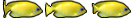

Other CAAT actors
CAAT.SpriteActor
This object's been deprecated. Its functionality is already present in CAAT.Actor via the methods:
setBackgroundImage, setSpriteIndex, setAnimationIndex, setChangeFPS, etc..
This actor objects' functionalities are already available at any CAAT.Actor which is the preferred way of setting up actors with images.
This actor object instances have the ability to treat an image as an array of sub-images. For example, the following image  can be treated as 3 different images, and even create an animation sequence by defining an array of indexes.
Every SpriteActor must define the following attributes:
- Animation image index. It means what subimages sequence to animate the sprite with. This is performed with a call to the method setAnimationImageIndex ( array_of_integer ). If no animation sequence is desired and just pointing to a concrete image index, a call to setImageIndex( index ) must be executed.
- Set sprite image. A CAAT.CompoundImage instance. This object will manage the sample image as an array of subimages. A call to the method setSpriteImage( compoundImage_instance ) will do. A CAAT.CompoundImage is different that a CAAT.SpriteImage despite they perform common functionality.
- change time. Every how much Scene time the Sprite should change the image from the Animation index. Default image index change is set to 1000 milliseconds. Call setChangeFPS( millis ) to set animation change frecuency.
- Transformation (optional). How to show the image. It can be mirrored horizontal and vertically. Just like ImageActor instances, a call to setSpriteTransformation(transformation) should be performed. By default, no transformation will be applied.
A CAAT.SpriteActor does not need to set its dimension since it will derived from the suplied sprite image. Alpha transparency applies as well to Sprites.
Example
In this example, 30 SpriteActor objects traverse continuously across a cubic bezier path.
var director= new CAAT.Director().initialize(
700,
350,
document.getElementById('_c6') );
var scene= director.createScene();
// define a resource preloader.
new CAAT.ImagePreloader().loadImages(
[
{id:'fish0', url:'../demos/demo-resources/img/anim1.png'},
{id:'fish1', url:'../demos/demo-resources/img/anim2.png'},
{id:'fish2', url:'../demos/demo-resources/img/anim3.png'},
{id:'fish3', url:'../demos/demo-resources/img/anim4.png'},
{id:'fish4', url:'../demos/demo-resources/img/anim5.png'},
{id:'fish5', url:'../demos/demo-resources/img/anim6.png'}
],
function( counter, images ) {
if ( counter==images.length ) { // when it is done loading
// save loaded resources on Director.
director.setImagesCache(images);
for(var i=0; i<30; i++ ) {
var index= (Math.random()*6)>>0;
var fish =
new CAAT.SpriteActor().
setSpriteImage(
new CAAT.CompoundImage().initialize(
director.getImage('fish'+index),1,3)).
setAnimationImageIndex( [0,1,2,1] ).
setChangeFPS(300).
addBehavior(
new CAAT.PathBehavior().
setAutoRotate(true).
setPath( new CAAT.Path().setLinear(0,0,0,0) ).
setInterpolator(
new CAAT.Interpolator().createExponentialInOutInterpolator(2,false) ).
setFrameTime( scene.time, 10 ).
addListener( {
behaviorExpired : function(behaviour,time) {
var endCoord= behaviour.path.endCurvePosition();
behaviour.setPath(
new CAAT.Path().setCubic(
endCoord.x,
endCoord.y,
Math.random()*director.width,
Math.random()*director.height,
Math.random()*director.width,
Math.random()*director.height,
Math.random()*director.width,
Math.random()*director.height) );
behaviour.setFrameTime( scene.time, 3000+Math.random()*3000 )
}
})
).
enableEvents(false);
var s= Math.random()*.5 + .5;
fish.setSize( fish.width*s, fish.height*s );
scene.addChild(fish);
}
}
});
CAAT.loop(60);